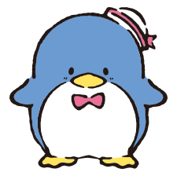

Tuxedo Sam is a dapper young penguin from Antarctica's Tuxedo Island. He overeats and makes some clumsy decisions. He owns a total of 365 bow ties. He is from a distinguished family and attended university in the United Kingdom. He can also speak English very well. Sam is blue in colour, and his body measurements are 100 cm in circumference at the bust, waist, and hips, and a red bowtie can be seen on him, below the beak. Sam has two younger brothers named Pam and Tam who are doppelgangers of him.
Tuxedo Sam has a group of friends that includes fellow penguins Chip and Dip, who are his twin younger brothers. Together, they often get into cute, humorous situations, especially due to Tuxedo Sam's clumsiness.